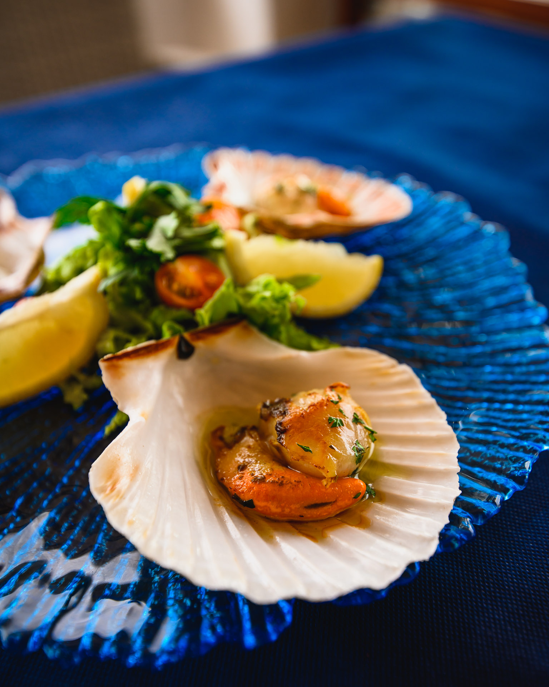
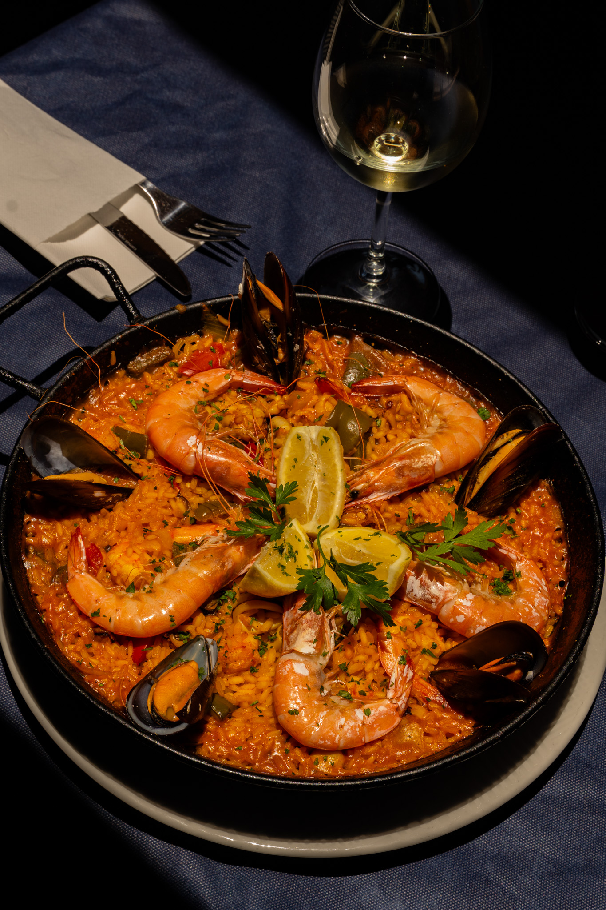
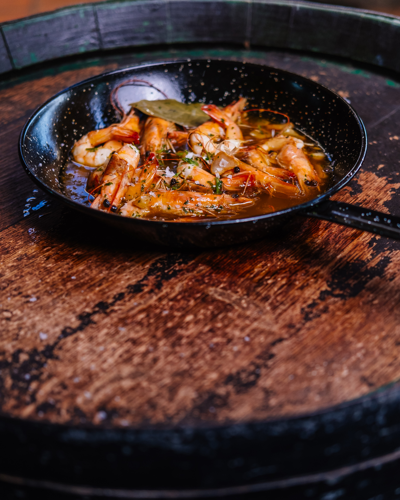

Papas arrugadas with mojo: the most Canary dish explained
Papas arrugadas, a staple of Canary cuisine, showcase the islands' rich agricultural heritage. Discover their origins, unique potato varieties, and cooking techniques.
Read moreFood, seafood and the good life in southern Tenerife

Papas arrugadas, a staple of Canary cuisine, showcase the islands' rich agricultural heritage. Discover their origins, unique potato varieties, and cooking techniques.
Read more
Discover the vibrant flavors of the Canary Islands with mojo verde, a cherished green sauce that embodies cultural fusion and enhances dishes with its fresh, aromatic qualities.
Read more
Discover the best seafood restaurants in Costa Adeje, from La Caleta's seasonal delights to Playa de las Américas' vibrant dining scene, offering fresh, local catches.
Read more
Spring in the Canaries is when the Atlantic gives its best. A practical guide to the shellfish and fish that hit their peak right now, and how to enjoy them in Costa Adeje and Los Cristianos.
Read more